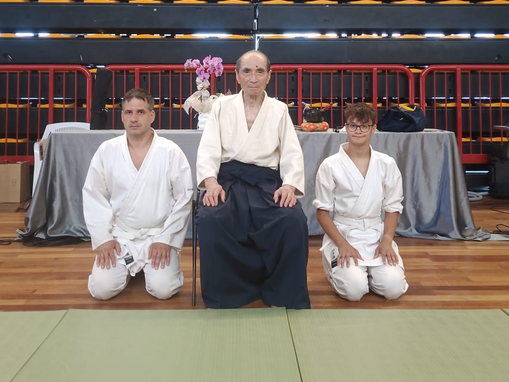
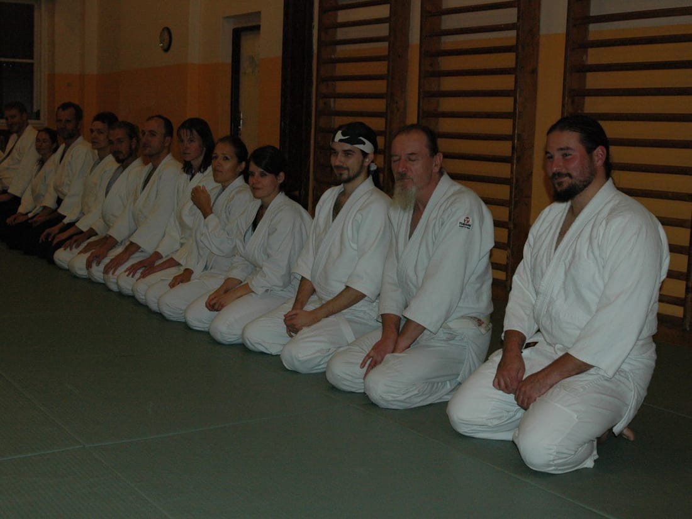
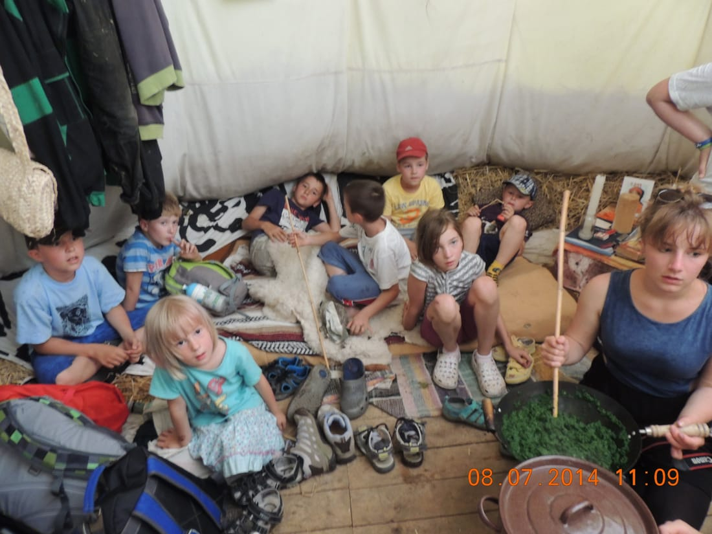
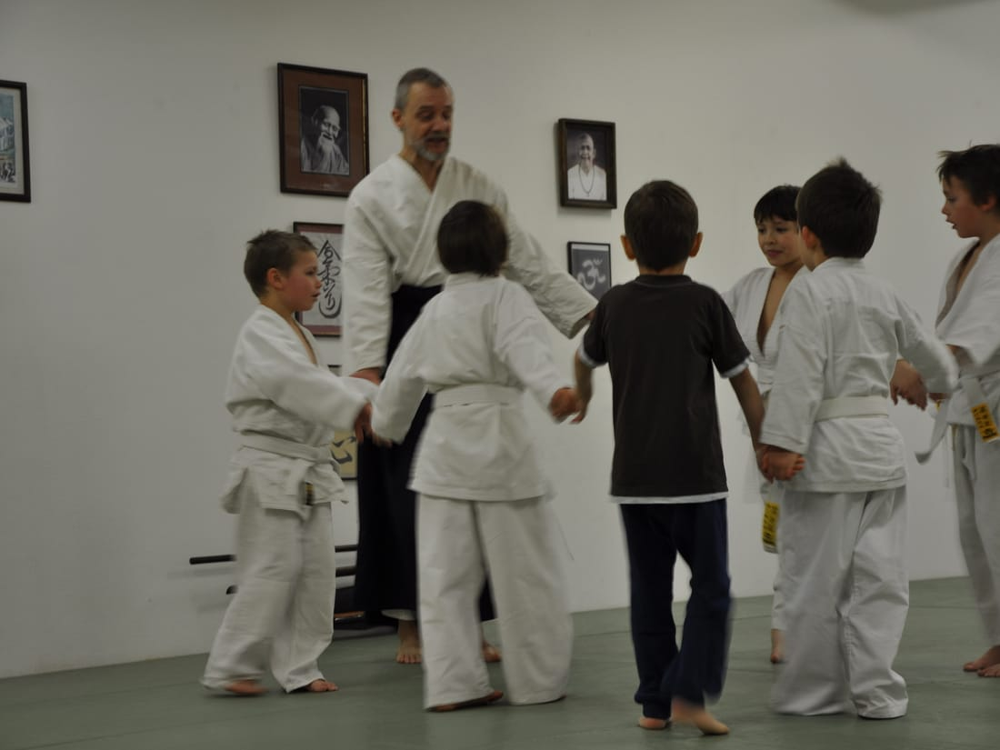
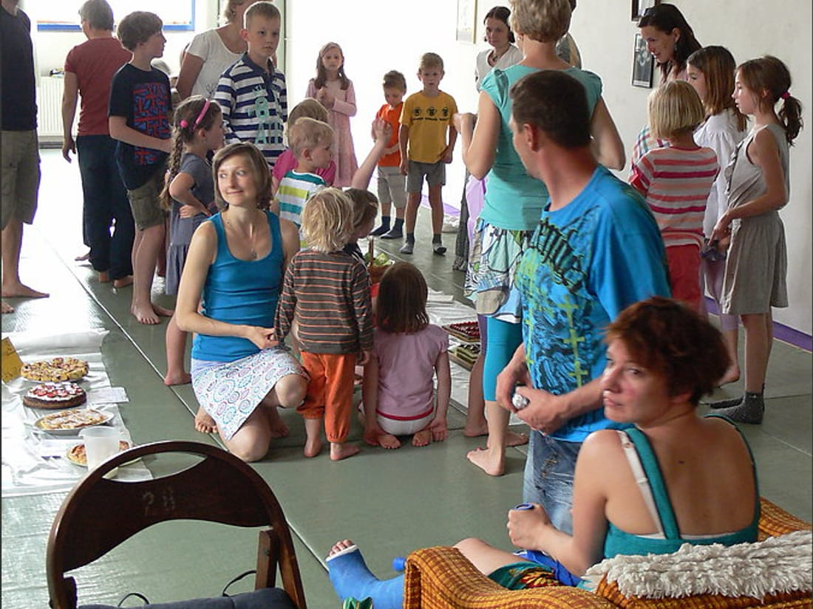
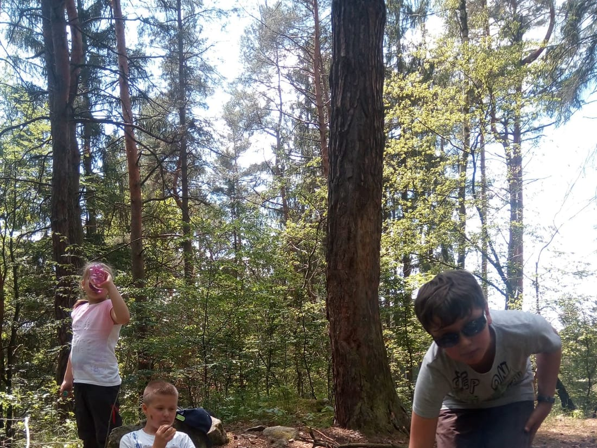
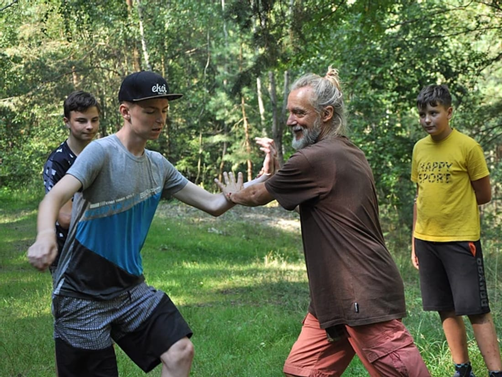
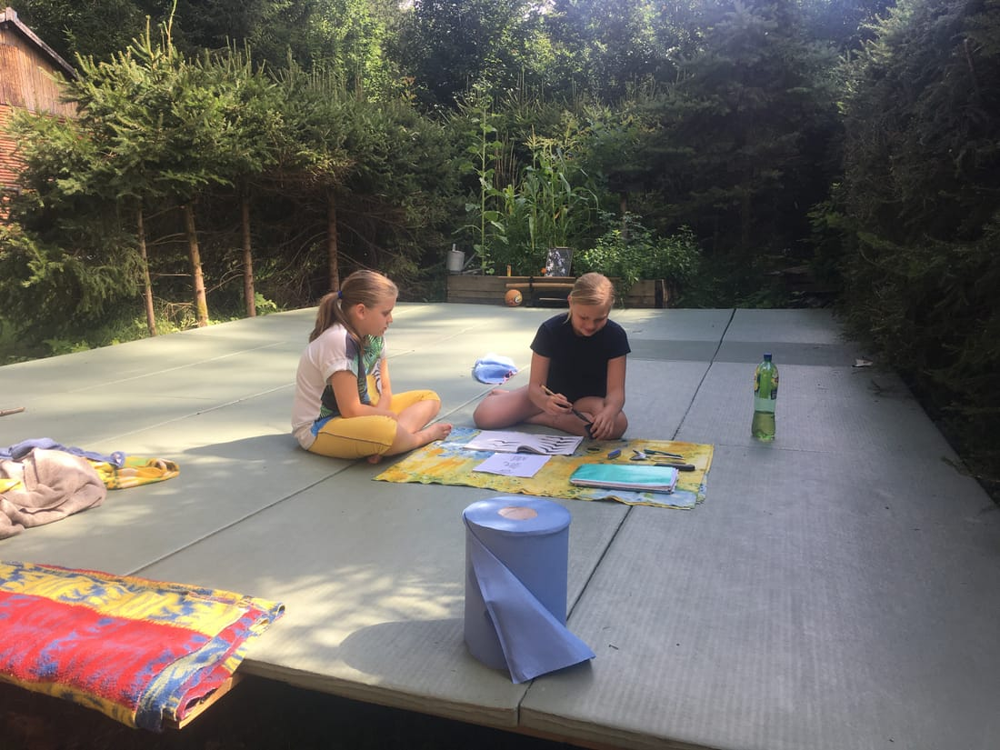
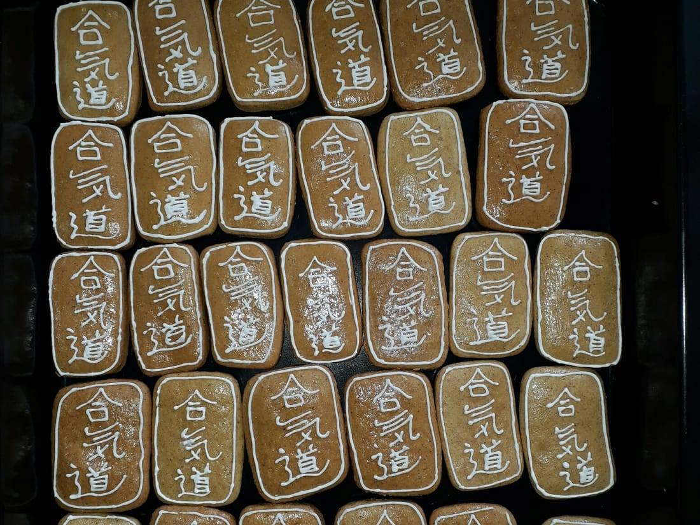
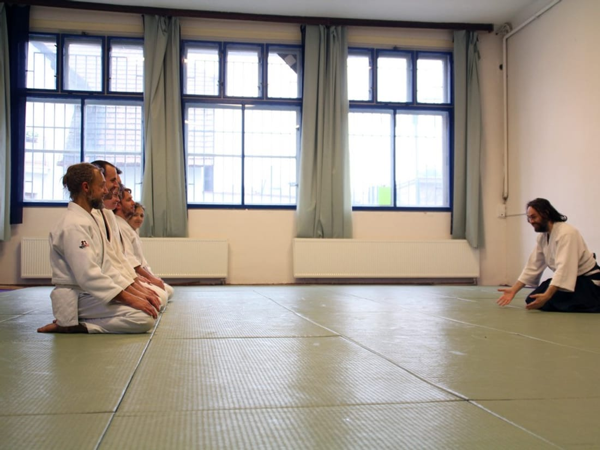

srpen 2026
Nový školní rok je tu, první cvičení tentokrát vychází na 14. 9. Těšíme se na vás.

Aikido a jóga v Říčanech, od roku 2004
nenásilná cesta
→ táhněte nebo scrollujte doprava mezi kapitolami, dolů uvnitř nich
Už více než 20 let se v Říčanech věnujeme aikidu a józe na dójó, kde společně cvičíme a potkáváme se.
Nejde nám o soupeření ani výkon. Cvičíme pro radost z pohybu, soustředění, rovnováhu a klid — každý svým tempem.

Jsme parta lidí, co rádi cvičí nenásilnou cestou. Dójó Na Cestě je místo pro každého, kdo si chce zacvičit, zastavit se a být chvíli s ostatními. Cvičíme tu jógu a aikido.
Co tomu ale předcházelo? Vraťme se na chvíli do roku 2004. Několik nadšenců pro aikido se tehdy rozhodlo přetvořit halu bývalé tiskárny SKALA v Říčanech na místo pro cvičení. Několik měsíců se prostor upravoval a zveleboval, až se v prosinci 2004 uskutečnil první slavnostní trénink.
Velké díky patří všem, kteří se na vzniku dójó podíleli, mnozí z nich cvičí aikido dodnes.
Náš klub je organizován pod Českou Federací Aikido (ČFAI) a na nákup tatami nám tehdy přispělo město Říčany formou grantu.
Největší dík ale patří našemu prvnímu učiteli Michalu Lachimu Šípovi, tehdy 2. dan Hombu Dojo, který nás vedl od samého začátku. Na jeho práci později navázal Radek Růžička a dnes nás vede Miroslav Skala, také 2. dan Hombu Dojo. Bez nich a všech, kteří se kolem dójó za ta léta vystřídali, by dnes nebylo tím, čím je.
Aikido je moderní japonské bojové umění, které spojuje pohyb, techniku a práci s tělem i myslí. Nejde v něm o poražení soupeře, ale o hledání způsobu, jak využít jeho pohyb a sílu bez zbytečného násilí.
Aikido založil Morihei Ueshiba (1883–1969). Od začátku v něm nebylo místo pro soutěžení ani poměřování výkonu. Důležitá je cesta samotného cvičení — učit se vnímat sebe, druhého i prostor kolem sebe.
Název spojuje tři znaky: ai (harmonie), ki (životní energie) a dó (cesta).
Na dójó Na Cestě cvičíme Rádža jógu, tradiční systém jógy zaměřený na práci s tělem, dechem a myslí. Cvičení je vhodné pro každého a nevyžaduje žádné speciální vybavení — stačí pohodlné oblečení a chuť cvičit. Pravidelná praxe přináší:
Každý začíná trochu jinak. Vyberte si, co je vám nejblíž. Nábor probíhá celý rok.

Cvičení pro předškoláky a prvňáčky, které propojuje aikido a jógu. Děti se hravou formou učí vnímat své tělo, pracovat s dechem, soustředit se a spolupracovat s ostatními. Postupně získávají větší jistotu a učí se zvládat nové situace bez zbytečného tlaku na výkon.

Cvičí spolu děti školního věku i mládež, začátečníci i pokročilí, kluci i holky. K aikidu patří také dechová cvičení a práce se soustředěním. Začít můžete kdykoli během roku. Na první trénink stačí tepláky, tričko s dlouhým rukávem a chuť cvičit.

Aikido pro dospělé bez ohledu na věk nebo předchozí zkušenosti. Začátečníci cvičí společně s pokročilými a každý postupuje vlastním tempem. Učíme se pracovat s pohybem, rovnováhou a silou — svou i partnerovou. Nejde o soutěž ani o to být nejsilnější.
Myslíte si, že už jste na aikido příliš staří? Přijďte se přesvědčit, že nejste.

Cvičíme Rádža jógu, která je vhodná pro každého bez ohledu na věk nebo zkušenosti. Nepotřebujete žádné speciální vybavení — stačí pohodlné oblečení a chuť cvičit.
Podívejte se, jak trénujeme.










Kolečkem nebo tažením listuješ sbírkami. Klikni na sbírku pro všechny fotky.
Čtyři postavy od kamaráda dójó, nakreslené v roce 2003, ještě dřív než klub měl vlastní web.


Dójó Na Cestě, Říčany. Aikido a jóga od roku 2004.